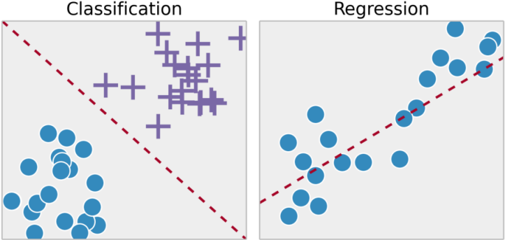

Введение
Типы задач ML
Задачи классификации (classification)
- $Y=\{-1,1\}$ - бинарная классификация
- $Y=\{1,\dots,M\}$ - классификация $M$ непересекающихся классов
- $Y=\{0,1\}^M$ - классификация $M$ пересекающихся классов
Задачи восстановления регрессии (regression)
- $Y=\mathbb{R}$
- $Y=\mathbb{R}^n$
Задачи ранжирования (ranking)
- $Y$ - конечное упорядоченное множество
Задачи обучения без учителя (unsupervised learning)
- $Y=\emptyset$ - ответов нет, требуется что-то делать с самими объектами

Предсказательная модель
Модель (predictive model) - параметрическое семейство функций
$$A=\{a(x,w)\ |\ w \in W\}$$
где $a:X \times W \to Y$ - фиксированная функция, $W$ - множество допустимых значений параметра $w$.
Пример
Линейная модель с параметром $w=(w_1,\dots,w_n)\in\mathbb{R}^n$:
$$a(x,w)=\sum_{j=1}^n w_j x_j - \text{регрессия и ранжирование}$$
$$a(x,w)=\text{sign}\left(\sum_{j=1}^n w_j x_j\right) - \text{бинарная классификация}$$
Функция потерь $\mathcal{L}(a, x, y)$ - величина ошибки алгоритма $a\in{A}$ на объекте $x\in{X}$.
Функции потерь для задач классификации
$\mathcal{L}(a, x, y)=[a(x)\neq y]$ - индикатор ошибки.
Функции потерь для задач регрессии
$\mathcal{L}(a, x, y)=|a(x)-y|$ - абсолютное значение ошибки.
$\mathcal{L}(a, x, y)=(a(x)-y)^2$ - квадратичная ошибка.
Эмпирический риск - функционал качества алгоритма $a$ на $X$:
$$Q(a,X,Y):=\frac{1}{l}\sum_{i=1}^l\mathcal{L}(a, x_i, y_i),\ l=|X|=|Y|$$
Метод минимизации эмпирического риска (Empirical Risk Minimization, ERM):
$$\mu(X,Y) = \arg\min_{a\in{A}}Q(a,X,Y)$$
Задача регрессии:
$Y=\mathbb{R}$;
$n$ числовых признаков $x_j, j=1,\dots,n$;
линейная модель регресии $g(x,w)=\sum_{i=1}^n w_j x_j,\ w\in\mathbb{R}^n$;
квадратичная ф-ция потерь $\mathcal{L}(a,x,y)=(a(x)-y)^2$.
Метод наименьших квадратов (частный случай ERM):
$$\mu(X,Y):=\arg\min_w\sum_{i=1}^l(g(x_i,w)-y_i)^2$$
Эмпирический риск на тестовых данных (hold-out):
$$\text{HO}\left(\mu,X^l,X^k,Y\right):=Q\left(\mu\left(X^l\right),X^k,Y\right)\to\min $$
Скользящий контроль (leave-one-out), $L=l+1$:
$$\text{LOO}\left(\mu,X^L,Y\right):=\frac{1}{L}\sum_{i=1}^L\mathcal{L}\left(\mu\left(X^L\setminus\{x_i\},Y\right), x_i, y_i\right)\to\min$$
Кросс-проверка (cross validation), $L=l+k$:
$$\text{CV}\left(\mu,X^L,Y\right):=\frac{1}{|P|}\sum_{p\in{P}}Q\left(\mu\left(X_p^l,Y\right), X_p^k, Y\right)\to\min,$$
где $P$ - множество разбиений $X^L=X_p^l\sqcup{X_p^k}$.